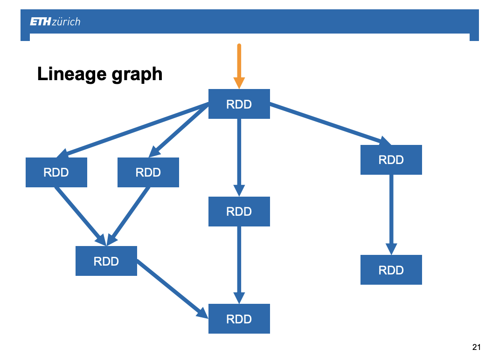
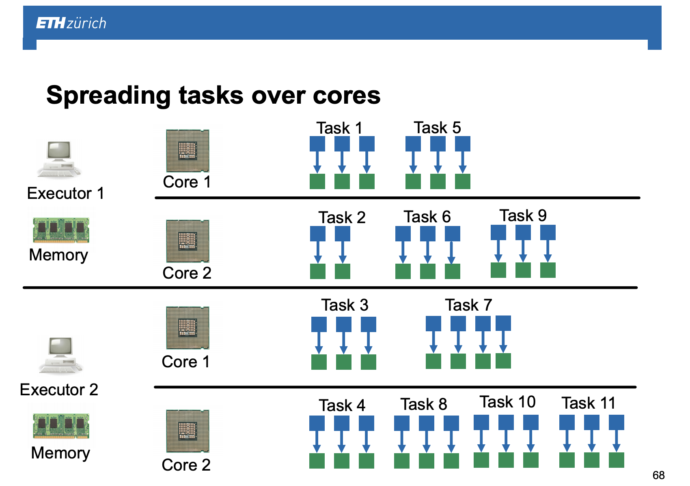
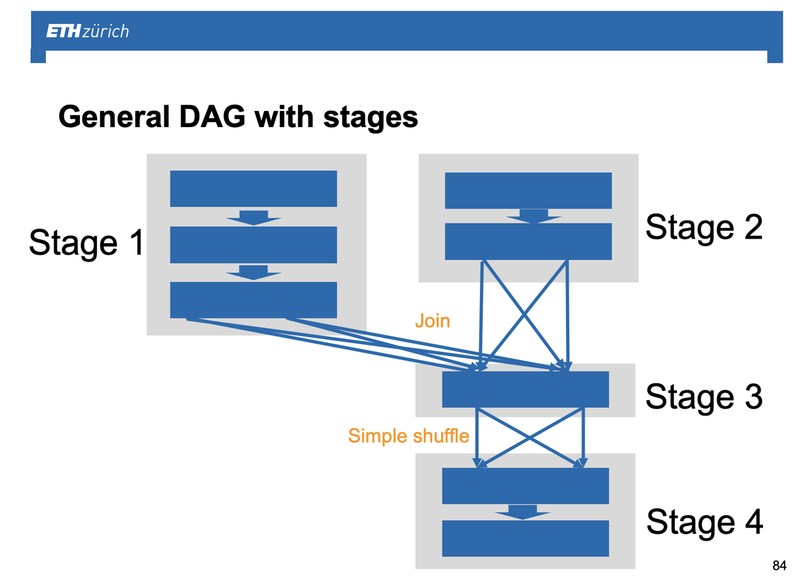
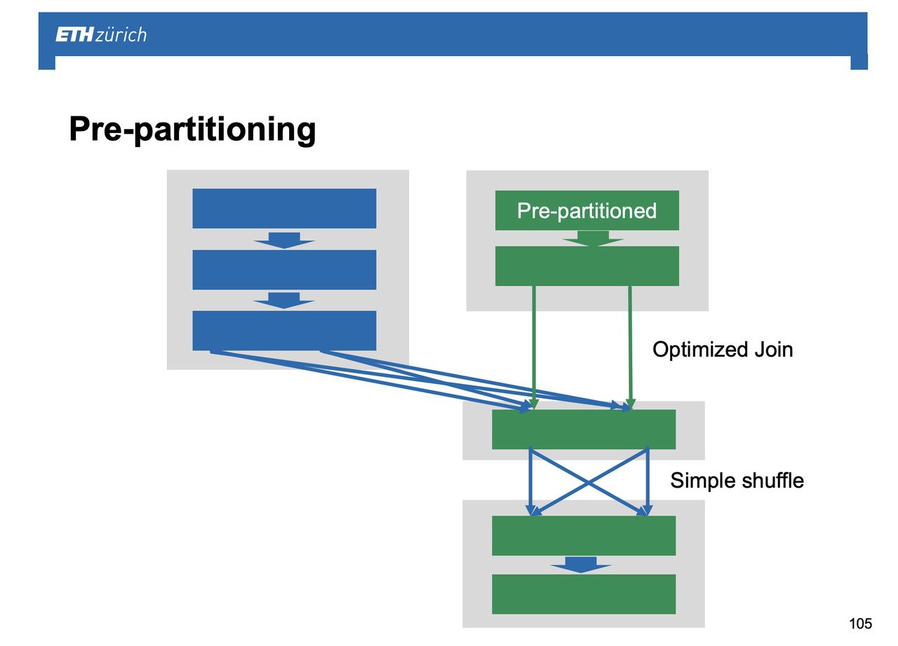

Spark Architecture
After the different posts written on setting up a spark session and working with RDDs available here, this post briefly goes a more into the detail of the spark physical layer.
It will introduce the concept of DAGs and will make a comparison of spark and the more restrictive MapReduce.
Position Relative to MapReduce
Albeit both MapReduce and Spark are the two major architectures that make parallel computation on distributed networks possible there are two key differences between the two that is important to understand.
The first one is on the first class citizens of the two.
- While MapReduce works with key-value objects and restricts the user to work with such, i.e. obligate to rephrase tabular and tree data with a index column representing the key
- Spark first class citizens are RDDs discussed in the previous post. No strict key-value is necessary and on the logical level you might even think of the data as being of their natural shape when writing your queries and/or performing the desired computations.
The second concerns the topology of the computation. While in MapReduce each MapReduce operation requires the output of a key-value tuple per key-value input in the mapping phase as well as a possible aggregation of key-values in the reducing phase and there is therefore some linearity of the operations, Spark topology relies on DAGs, i.e. a directed acyclic graph.

It is clear that being the graph directed there is one way the operation works and no "inverse function" can be performed going back to the previously existing RDD. The inverse function must be manually written by the user and must generate a new RDD.
Moreover, it is acyclic. This is necessary as would there be a cycle than you would run into a chicken egg problem, in CS terms a deadlock. You would need a not at the time existing RDD to perform some operation.
Finally, due to the graph component it is possible to generate multiple RDDs from a single one in one operation. In this sense in contrast to MapReduce where simply a reduce operation exists, spark provides the option also for exploding an RDD so to say.
On the physical layer
The architecture of Spark is analogous to the one of MapReduce discussed here with the YARN improvement discussed here.
The architecture is always of Master-Slave type, each nodes has slots/containers - i.e. virtualized resources attached - and simply the type of computations, i.e. the maps, carried out on each core executor is different in the two architectures.
The more specific idea is then the following for each DAG job you need to perform spark breaks this into different tasks that are assigned to the different containers (executors in spark terminology) and within each executor such tasks are further assigned to the different virtual cores.

The question that arises is how such tasks arise?
To understand that we have to go back and consider again the expensive shuffling and the key objective of minimizing this in the space of distributed computing.
What spark does in order to fulfill this requirement is to group a series of RDD transformations together in a way that these can be computed locally without the need of shuffling data around. Such a vertical grouping of transformations is called a stage.
A spark job is defined then by the sequence of all of the stages.
In this context tasks are then inferred from the stages by performing the desired in Spark specified maps in an optimized way. Multiple tasks from different local stages might be done concurrently as long as it is possible to parallelize over them.

As final note, recall that when storing data on HDFS it is important always to hold the most homogeneous data on which the most common operations are done on the same or on neighboring HDFS 128 MB blocks. This will allow you to have the minimal amount of possible shuffling when operating on your data. In this sense, if data are not physically stored in the way it makes the most sense for you and your typical queries/computation, then it makes sense to pre-partition the data by doing the operation once and then persisting your results.
